Flying Wing Simulation and Control
Project Overview
This page combines the two projects I did for my ME103 and E178 classes I took during my undergraduate degree. Both projects focused on analyzing the performance of a flying wing with this idea being built off of one of my group partner's personal project where he had designed the particular flying wing We were examined previously.
My ME 103: Experimentation and Measurements class final project focuses on determining how well the simulation software VSPAERO a solver within OpenVSP performed relative to wind tunnel test data. This was specifically done looking at trim and pitch stability with the goal being to determine how well the simulation software predicted three different stability parameters. Additionally, longitudinal wing twist and Reynolds number was varied across tests and models with how these variables affected the stability parameters also being analyzed. Unfortunately due to the Stratasys J55 we were using to print our models breaking early into our test campaign this idea did have to be altered slightly the wind tunnel tests being substituted ANSYS Fluent simulations with those ansys results being validated to the best of our abilities with the little wind tunnel data that had been collected.
My E178: Statistics and Data Science for Engineers class final project built upon this work leveraging the validated OpenVSP workflow to create an aerodynamic surrogate model of the flying wing to be used in a model predictive control (MPC) control architecture. This final project was required to focus on machine learning with the majority of the project focusing on training various models, the MPC was added on as a demonstrator to show where a surrogate model like the one we developed could be useful. This page only focuses on the best working model as the model training portion of the project was done by one of my project partners with more focus put upon the MPC controller which is the portion I worked on.
The following page details all steps done for both projects. This includes both work that I performed perfectly as well as work done by my project partners. The work done by my partners are included to provide context for the results of the project and as such will not be in as much detail. I will not in respective sections if a portion that is being presented was done by one of my project partners.
Data Collection Methodologies
Originally the plan for testing was to test 5 total longitudinal wing twists (-8°, -6°, -4°, -2°, 0°) and 3 wind tunnel velocities (35 m/s, 45 m/s, 55 m/s) corresponding to Reynolds numbers 9.9e5, 1.3e6 and 1.6e6 respectively. Unfortunately due to issues with a printer only the -6° wing twist case model was printed and tested. This model was tested at all three velocities in both -20 to 20 degree pitch sweeps and -10 to 10 degree yaw sweeps. The yaw sweeps were originally planned to be examined however upon examination of the data post test it was determined that the wind tunnel instruments were unable to resolve the forces accurately and as such the yaw cases were not considered post this test.
Once the data was collected it was post processed by my project partner. The forces were resolved in aircraft body coordinates from the force data collected by the wind tunnel and then converted into their coefficient forms. Throughout this process the uncertainty from the wind tunnel tare, coordinate transform, normalization, and uncertainty from the printer's tolerances was propagated through the calculations.
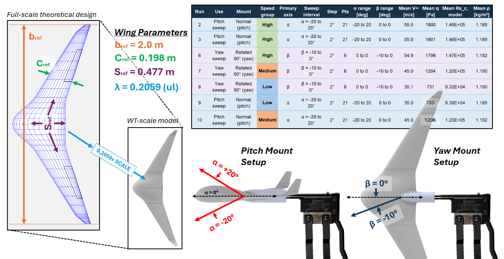
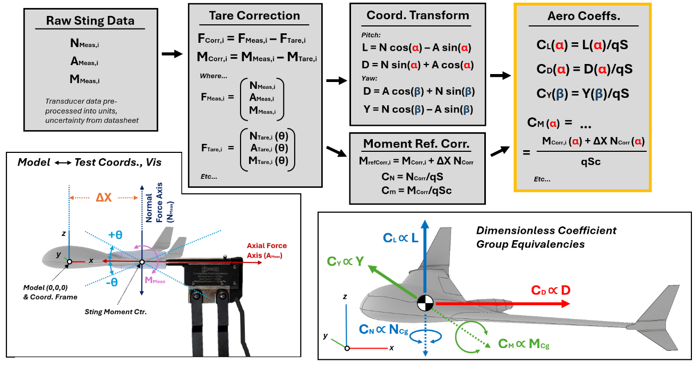
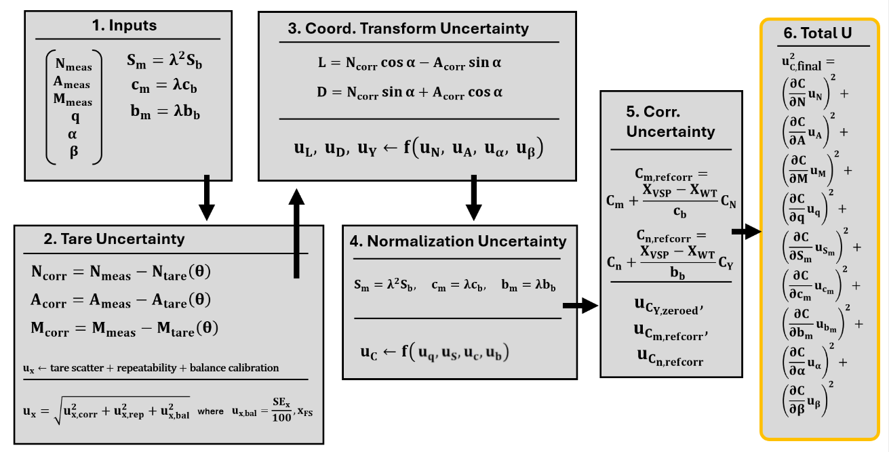
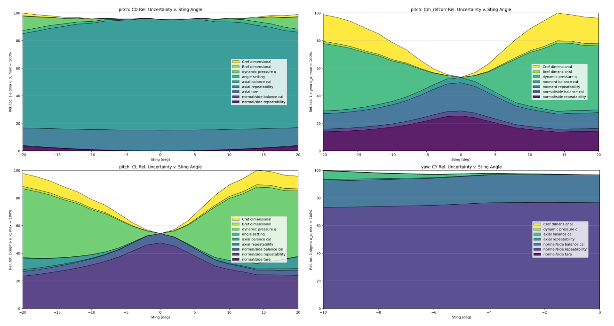
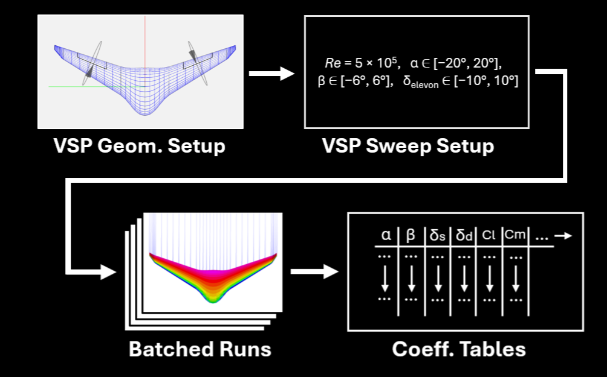
The OpenVSP setup was adapted from my project parters original personal project and as such feathered a two meter wing span which was much greater than the wing span of the model used during wind tunnel testing. To accommodate this the spanwise Reynolds number was matched between the OpenVSP simulations and wind tunnel conditions. With this setup the OpenVSP simulation was conducted matching the operating points of the wind tunnel test, meaning that three velocity cases were considered with -20 to 20 degree angle of attack sweeps to be conducted for each one. This was done for all 5 wing twist cases outlined earlier.
To make up for the lack of wind tunnel data a series of ANSYS Fluent simulations were conducted. These simulations cover all all 5 twist cases with Each case being simulated for all 3 velocity cases with each case being taken through the full -20 to 20 degree angle of attack sweep. Additionally a sixth case was simulated of the -6° wing twist wind tunnel model that included the sting attachment included. This was done for use in verifying the ANSYS Fluent setup and results against the wind tunnel data. These runs were conducted via a python script that utilized PyFluent to call batches of airfoil sweeps with each of these angle of attack cases being achieved through changing the velocity inlet vector of the simulation to simulate a change in angle of attack. This script utilized a Fluent case I created in ANSYS workbench as a baseline taking the mesh and setup to be edited for each case.
For the fluid volume I elected to utilize a half cylinder with a half-dome inlet with a symmetry plane along the XZ plane. To ensure adequate distance from the sides of the fluid volume a radius 20 chord lengths or 2 meters was selected for the cylinder and half-dome with the ends of these being 2 meters away from the drone. With this fluid volume generated, a mesh was generated utilizing ANSYS Fluent meshing and a uniform boundary layer resulting in a y+ of 25. This meshing was done for each twist case resulting in 6 unique meshes being generated. The boundary conditions were set up as two velocity inlets on the dome and sides of the cylinder and a pressure outlet at the bottom of the cylinder. For the viscosity solver the K-Omega SST formulation was used and and the 2nd order upwind formulation was utilized for the solver. From manual testing it was determined that the solutions of these simulations converges generally within 150 iterations with a period of converged noise at the end, as such each simulation was hardcoded to run for 150 iterations in pyFluent. This was done so that the last fifty converged iterations could be used to create a measure of uncertainty that could be used in later analysis.
These simulations were set up to report values of lift, drag, and pitching moment with the pivot point being determined from the location of the center of gravity from the model's CAD file. The uncertainty of these values were taken to be the maximum and minimum value of the converged solution within the last 50 iterations divided by two. This way any solver artifacts, oscillations, or issues with convergence could be captured and factored into the statistical analysis done later. With these values extracted the data was post process with the three reported values being multiplied by two to overcome the use of the symmetry condition and then converted into their respective coefficients. The uncertainty was propagated through this process using the root sum method, with this process being fairly straightforward since all other values in this calculation were exact scalars.
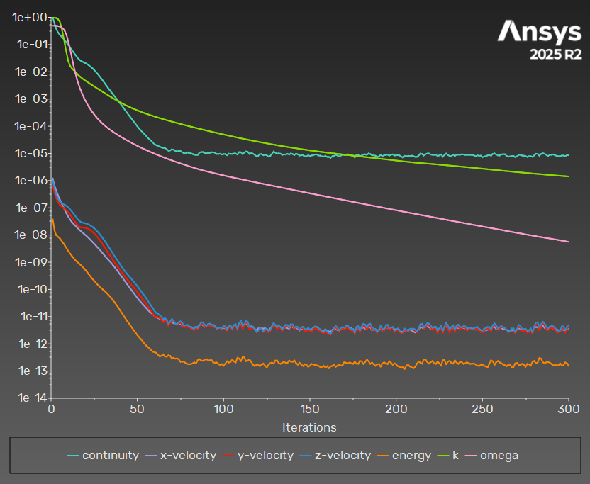
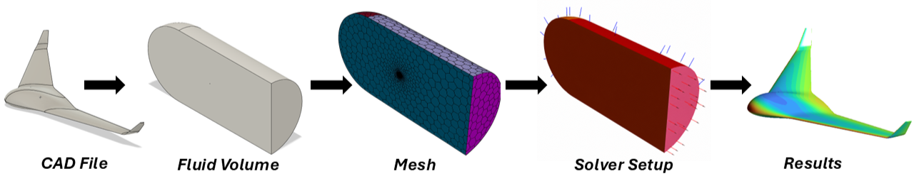
Results
To confirm the validity of the ANSYS Fluent methodology the results of the -6° wing twist case with the sting attachment was compared to the wind tunnel data for Both the overall coefficient curves and for the trim conditions. For both cases the effects of uncertainty were considered and the 95% confidence intervals displayed on the comparison graphs. The ANSYS uncertainty is so small however that the confidence interval is not really visible which explains why it looks as if that confidence interval was not considered.
From the 3D comparison graphs it can be seen that for majority of the angle of attack range the results from the ANSYS simulation falls within the 95% CI of the wind tunnel data with the majority of the deviations occurring at high angles of attack near stall. This indicates that to a 95% confidence that the results of the ANSYS simulation and wind tunnel tests are the same.
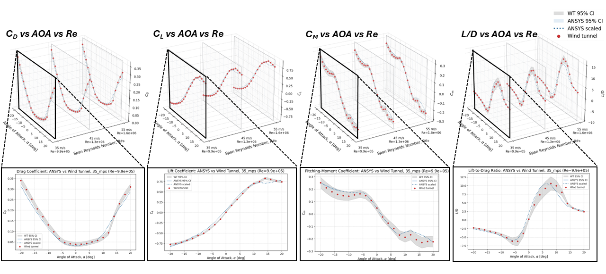
This is further supported from the tolerance analysis that my partner performed for this comparison. He found that for angles of attack from -7.5 to 12.5 degrees which is defined as the "linear region" the two values are within 10% of each other indicating that ANSYS gives an accurate prediction of aerodynamic coefficients across this range. This is important because the values that are being analyzed for trim and stability all fall within this region. This indicates that these values from the ANSYS simulation should be accurate to the results of the wind tunnel tests.
To further verify this I performed additional confidence interval significance testing where I utilized Monte Carlo uncertainty propagation to determine the value and 95% CI of the three stability parameters across all three Reynolds number conditions. As can be seen for all values except the lift to drag ratio at 35 m/s the value predicted by ANSYS fell within the value determined from wind tunnel testing. Additionally, for the lift to drag at 35 m/s case it can be visually seen that the value just barely falls outside of 95% CI of the wind tunnel tests. As such it was determined that for the linear region we are interested in and for the stability conditions the ANSYS Fluent simulations served as an adequate surrogate for wind tunnel testing and could be used as a basis of comparison for the OpenVSP data.
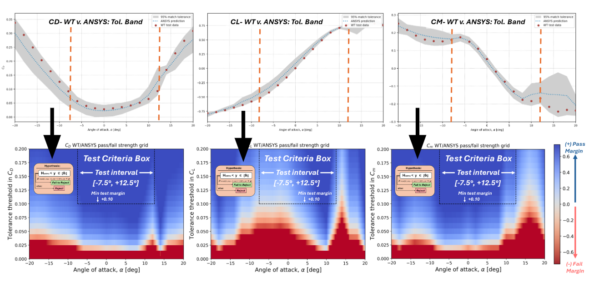
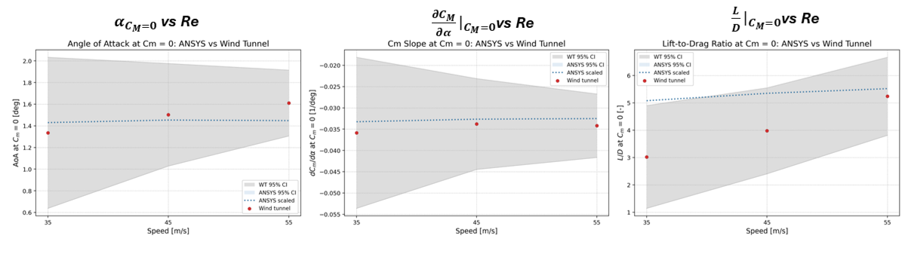
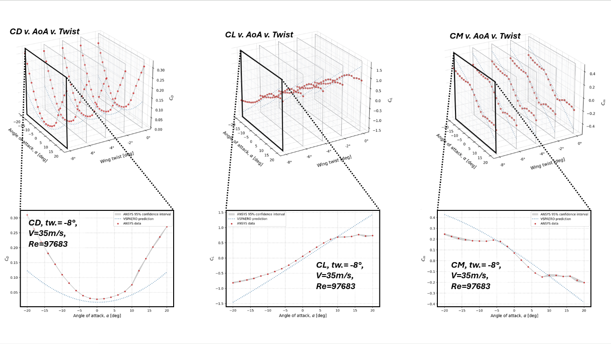
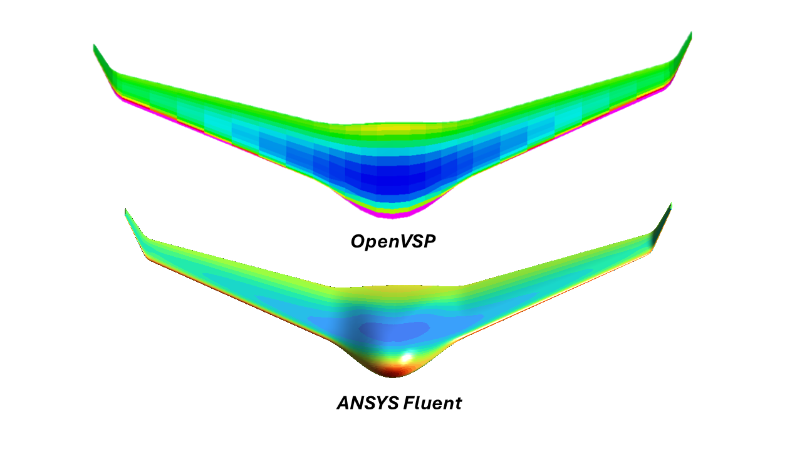
In comparing the results from ANSYS and OpenVSP simulation results it can be seen where the lower fidelity OpenVSP method shines vs where it falters. From the comparison graphs it can be seen that the OpenVPS solution performs best in the defined "linear region" after which it diverges significant;y from the ANSYS solution. This makes sense in the context of the solution methodologies both simulation tools use. ANSYS is an FEA based method that considers viscosity in the flow while OpenVSP utilizes an inviscid potential flow based solver. This means that OpenVSP cannot consider parasitic drag and cannot predict flow separation and stall which are the values and locations where the two solutions are the most different.
Once again my partner performed a tolerance analysis examining the same "linear region" as before with the same examination of 10% tolerance. This analysis revealed that the two solutions were within 10% of each other across the "linear region" with the exception of a small corner of the bounding box for the lift coefficient along the high angle of attack end of the region. In addition to this tolerance analysis I also performed the same Monte Carlo uncertainty propagation technique to analyze the similarity of the stability parameters between the two solutions for all cases. This analysis showed that the differences were statistically significant for all cases, however, it is hard to say if this significance has much physical meaning given how small the confidence interval bands are for the ANSYS solution. As such I conducted an additional analysis examining the practical significance of these differences by looking at the marginal percent differences between each value for all cases. This analysis showed a wide range of differences ranging from 40% to 200% difference between the solutions. This can attributed to two factors, the fact that the values that the simulation outputs being very small and as such inflating the percentages and to the most likely real level of difference seen between the two solutions. The big takeaway however is that even on the extreme end of a 200% difference this difference is still within the range that small design modifications, such as adding ballasts, could account for slop in the results of the analysis. As such it was determined that while OpenVSP is not a powerful enough tool to be used for in depth or final analysis, it does demonstrate adequate functionality as a design aid for rap[id iteration. It achieves enough fidelity to which designers of flying wing aircraft could use it as an analysis tool for rapid iteration as long as they are cognizant of its inherent pitfalls.
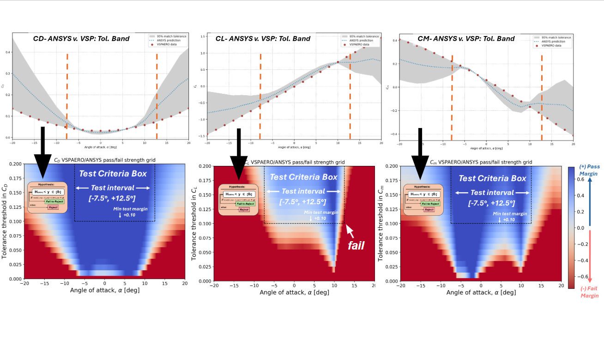
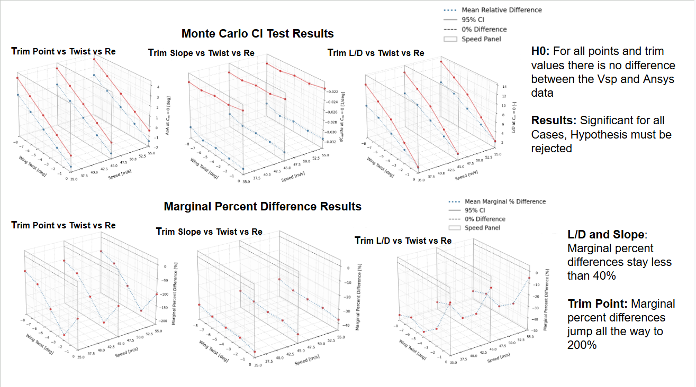
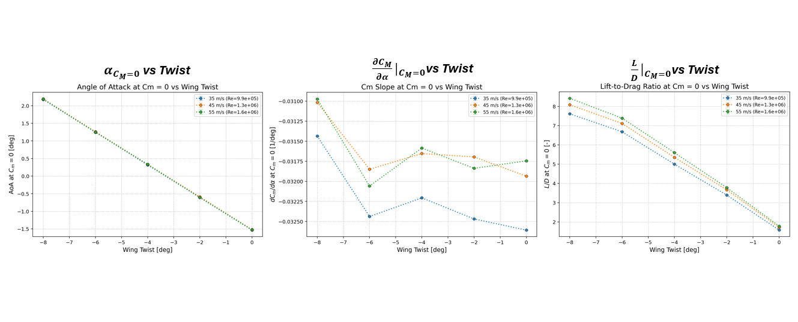
The results of the ANSYS simulations were also utilized to examine how the wing twist and Reynolds number affected the three stability parameters being examined. From the graphs on the left upon first glance it seems that twist seems to have a significant effect on the angle of attack at the trim point and L/D at the trim point with more negative twist values resulting in smaller values of both parameters. In addition for these two values it appears that Reynolds number had a marginal to negligible effect for all of the twist cases. The slope at the trim point tells a different story with both the effects of twist and Reynolds number seeming to both not having much effect on the value with the maximum difference observed between any two points only being 0.001 1/deg. This makes sense considering that we would expect wing twist to only shift the location of the Cm vs alpha graph not change its slope and we would expect the Reynols number to have marginal effect due to it only being varied over a fairly small range. To confirm these results additional statistical tests were performed on the results including a Two Way Permutation Based ANOVA and a Monte Carlo CI test for significance.
The first analysis that I performed was a Two-Way Permutation Based Anova. This test is similar to a regular ANOVA however since the ANSYS data cannot be assumed to be Gaussian a custom null distribution through the random shuffling of labels instead of using the regular F-distribution. The results of this ANOVA indicated that for all cases both the effects of twist and Reynolds number were significant. The result must be taken with a grain of salt however for the same reason as mentioned earlier. The ANOVA relies on the calculated CI of the ANSYS data which we know is very small meaning that even marginal differences between values could be seen as statistically significant. Therefore despite the ANOVA indicating the significance of the results this does not inherently mean that for every case and every independent variable the effect is practically significant.
Due to the issues with the ANOVA an additional test was performed utilizing a similar CI test with Monte Carlo uncertainty propagation as used in the previous section. The purpose of this test was to determine which of the two factors, twist or Reynolds number was more significant by comparing the effects both to each other and to variation induced by uncertainty. As can be seen from the results for the location of the trim point and L/D at the trim point the wing twist was determined to be the dominant factor. Additionally for the slope at the trim point both Reynolds number and twist were determined to be equally dominant. This supports the conclusions from analysing the graphs with Reynolds number being an overall insignificant effect for all cases and twist only having significant effects on the location of the trim point and L/D at the trim point. This makes sense as stated previously with the twist being expected to have little to no effect on the slope and the Reynolds number not being varied by enough magnitude to have any practical effects on any of the parameters.
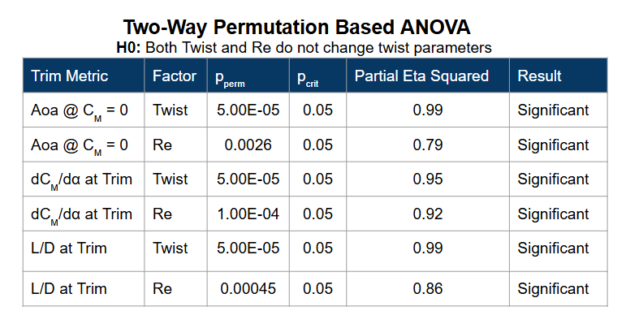
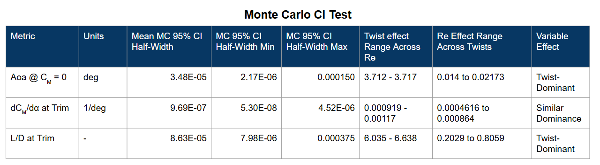
Surrogate Model Data Generation
Given the validity of OpenVSP as an analysis tool for applications where perfect accuracy is not needed the next question became what additional layer of computational speed improvement could be extracted from this solution method. This interest matched well with the topic on our E178 class's final project statement which tasked students with creating an ML model for use in prediction. As such for this project we sought to create a surrogate model for the flying wing using that model to then develop a model predictive control (MPC) architecture that could control a powered glider version of the flying wing's heading in 3D space.
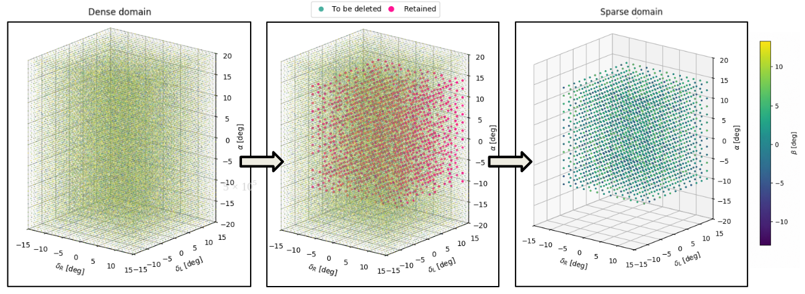

As such the OpenVSP model from the ME103 was modified to take two additional inputs corresponding to the symmetrical and differential actuation of the flying wing's elevons. This reconfigured model was then used to generate thousands of data points across multiple pitch, yaw, symmetrical, and differential angles with each simulation exporting both the 3 force coefficients and 3 moment coefficients acting on the aircraft in 3D space.This was done over a sparse selection of possible points in 3D space with the idea being that we could train our surrogate model to be able to predict these 6 coefficients in the orientations that were not simulated using OpenVSP.
The data was generated in OpenVSP along the 4D parameter space's "principle axes". This was achieved by varying the pitch and yaw along 15 to -15 and -10 to 10 degree angle sweep respectively with 1 degree spacing. As such all permutations of this positional data was captured in the training data. However this was not the case for the elevon displacement angles. These angles were only swept independently from -20 to 20 degree sweeps meaning that for each of the trajectory angles only one of the two elevon angles were nonzero at a time. This means that only the two principle axes of the elevon positions were simulated with combinations of the elevon positions not being present as can be visualized in the graph to the left. This was done due to it being nearly impossible to simulate all of these angles with there needing to be 2111 points to do so. As such there is where the usefulness of the surrogate model comes in as it would be able to predict the values of the coefficients in this unstimulated space without the need of expensive computation.
That is not to say no data was generated in this combined parameter space. For model validation purposes an additional 2000 data points were generated with off principle axis elevon positions to be added to the validation set utilized to ensure the proper training on our surrogate model.
Surrogate Model Creation
Since the main goal of this project was to explore the different processes and techniques of regression many different models were developed to attempt to create a surrogate model. The majority of this work was not done by me and was done by one of my project partners. As such I will only discuss the final model utilized for the controller, the Multi_Layer Percentron (MLP) model.
This model is a type of machine learning that utilizes a series of weighted nodes to predict outputs from the given inputs. These nodes are tuned by training the model in which known input-output pairs are used in conjunction with a given loss function to back propagate and change the weights of the nodes. In this way a very accurate model can be created without any need to manually tune the model. In the case of this model a weighted mean absolute error (MAE) loss function. This modified MAE gives extra weight to the values of CM, CL, and Cl as they mattered more for the controller. With this loss function decided the model was trained using 70% of the generated data for training and 10% for validation over 500 epochs resulting in a maximum MAE across all 6 coefficients of 0.4.
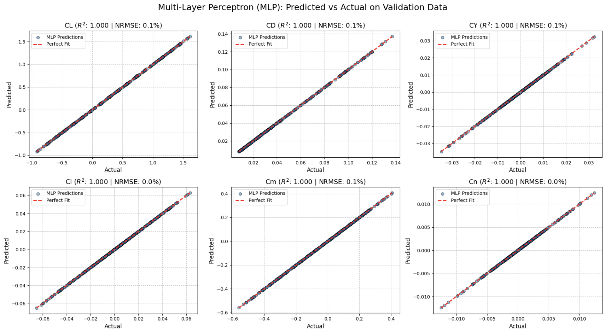
Once the model was trained it was then tested utilizing 20% of the original on principle axis data along with the extra 2000 off principle axis data points. As can be seen from the graph on the left the MLP model performed exceptionally well with each model achieving an R2 value of 1 and a maximum normalized root mean square (NRMSE) value of 0.1% across all coefficients. This indicates that for both on axis and off axis positions the MLP model was able to accurately capture the trends of the data and use those trends to predict all 6 coefficients well. This model was easily the best of any that were trained and as such was selected to be used in the MPC controller.
Model Predictive Controller
As has been discussed previously the MLp model that was developed learned the underlying trends in coefficients change with respect to these different angles from the OpenVSP data and as such is able to predict these coefficients for any combination of angles in 3D space. As a result of this the MLP model also learned how the yaw, pitch, and roll moment coefficients were coupled with the different control surface deflections, which is important considering that the flying wing can only control yaw by also changing its pitch and roll. In practical terms, this means the controller does not need to call any sort of CFD solver during each simulation step. Instead, the trained MLP provides quick coefficient estimates that can be converted into forces and moments. As such this model is perfectly used to be used as the aerodynamic force prediction solver in an MPC control architecture.
On a basic level, Model Predictive Control works by repeatedly simulating possible future control actions over a short prediction horizon. At each update, the controller tests candidate control surface commands, predicts the resulting future aircraft states, scores each rollout, and applies the first command from the best sequence. Once this is done, the controller then completes this process for the next time step, and the next, and so on, this achieves control based on the predicted outcome of its underlying model.
The MLP model is incorporated into this framework as the predictive aerodynamic model inside these rollouts. For every predicted future state, the controller computes the local aerodynamic inputs, queries the MLP for coefficient predictions, converts those coefficients into aerodynamic forces and moments utilizing the local pressure and velocity conditions, and advances the dynamics. This is how the controller is predictive, it can evaluate how a given control choice is expected to generate forces and as such how it is expected to change future heading, pitch, and roll, position as well as their rates.
The MPC framework in its current form is not very advanced and serves as a demonstrative example of what this sort of surrogate modeling can be used for. The controller in this case is configured only to control heading to a fixed goal and does not care about its x, y, or z position. In addition, the controller is unable to change thrust values with thrust being set as a fixed number. Finally, the MPC control horizon is fairly short with only a fixed small number of candidate control sequences being considered at every step, this was done to lessen the needed compute power at the cost of severely limiting the controller's abilities. As has been mentioned previously, the main goal of this project was to explore regression and machine learning as such this controller was meant to be a “cherry on top”, showing at least one way this type of ML model could be used and as such was not as advanced as it could have been.
With the controller made it was then validated over a set of three conditions. The controller was tested under steady state conditions, a 0.1 Hz sinusoidal pitch command, and a 90 degree turn command. As can be seen from the animation on the right the controller was able to achieve the requested commands with only some measurable drift and overshoot. These flaws are most likely present due to the relatively short horizon and large time jump that the MPC controller is working under which was implemented due to the hardware limitations of my laptop. Therefore given the limitations of the hardware available and the nature of what was required by the project this controller worked sufficiently for the purposes it was designed for.
In addition to evaluating the MPC on its own via the diagnostic command sequence I also compared the performance of the MPC controller to a baseline PID controller across the three same command sets. The PID controller was made by one of my project partners as a part of the personal project that this class project evolved from. As such the controller was already tuned for this aircraft configuration and was perfectly suited for this comparison. For each comparison both the MPC and PID were set to have the same constant thrust and given the same commands to ensure that a standard basis of comparison was established. Below are the trajectory plots and animations corresponding to each of the three test commands.
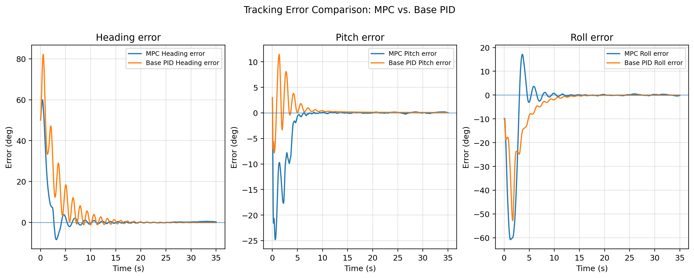
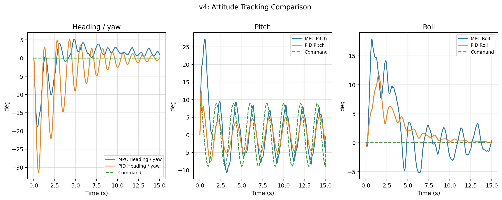
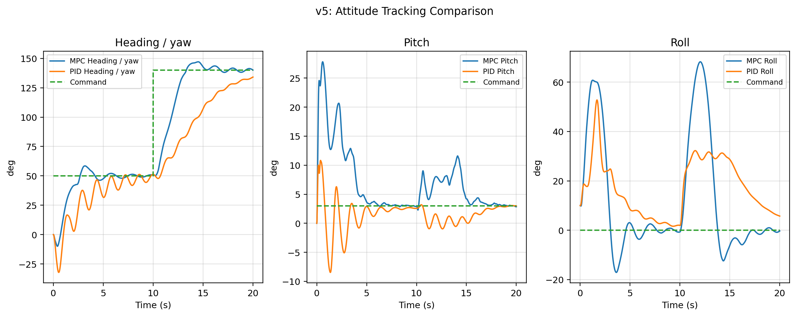
In this case both the MPC and PID controllers reach steady state within a similar time frame with the MPC controller hitting steady state slightly faster. While they do reach the steady state faster it can be seen that the MPC controller loses less altitude when doing so compared to the PID controller. This most likely due to the MPC controller's better understanding of the coupling between roll, pitch, and yaw allowing it to overcome its poor yaw authority with a roll and pitch style maneuver which the PID does not understand as well.
Additionally as shown in the tracking plots, the MPC stays close to the commanded trajectory once the maneuver settles, with the trajectory error generally remaining within around 0.2 degrees. However, the response still contains a small amount of jittery oscillation around the command. The PID controller in steady state does not have this issue and is smooth once it reaches the commanded trajectory. This is likely caused by a combination of the MPC controller's short prediction horizon, finite candidate sampling, and the strongly coupled yaw-roll dynamics of the flying wing. The PID does not have these issues with its natural damping, instead maintaining smooth control at the steady state point.
From the plots it can be seen that in the pitch direction both controllers are able to control to the frequency of the sine wave however the MPC controller is much better at achieving the amplitude of the sign wave while the PID is unable to achieve that amplitude. THis would indicate that the MPC controller performs better under sinusoidal commands compared to the PID controller. This does come with some drawbacks. For one the sinusoidal tracking of the PID while having less amplitude is much smoother compared to the more erratic behavior that the MPC controller exhibits. In addition, during this maneuver the PID is much better at keeping the rest of the command directions at a smaller oscillation compared to the MPC controller. This is probably due to the heightened coupling between the three control directions that the MPC uses causing it to take more aggressive coupled moves to reach the desired control goals.
In this case it can be seen that the MPC greatly outperforms the PID controller when making yaw maneuvers. This can be visually seen in the animation where the MPC controller is able to fully complete the 90 degree turn before the gif loop resets while the PID controller is still finishing its maneuver. The MPC controller was able to take a significantly sharper corner than the PID controller most likely due to its better understanding of the coupled control directions giving it the ability to take aggressive roll and pitch maneuvers to turn. This does have the drawback however of the MPc controller having a larger tendency to make more aggressive potentially damaging moves that put stress on the control surfaces when compared to the PID controller. This can most likely be fixed by adjusting the cost function the MPC uses when determining the optimal control strategy.
Gallery
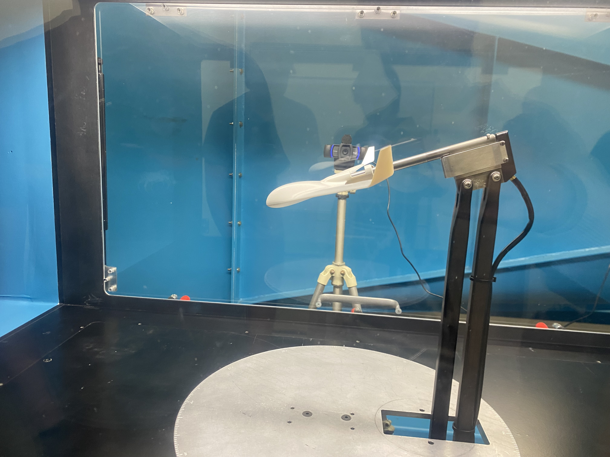
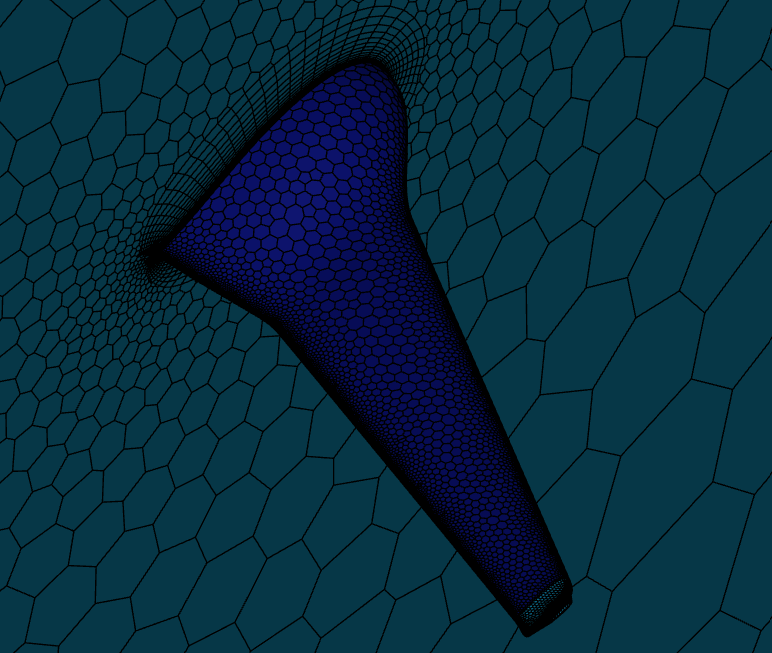
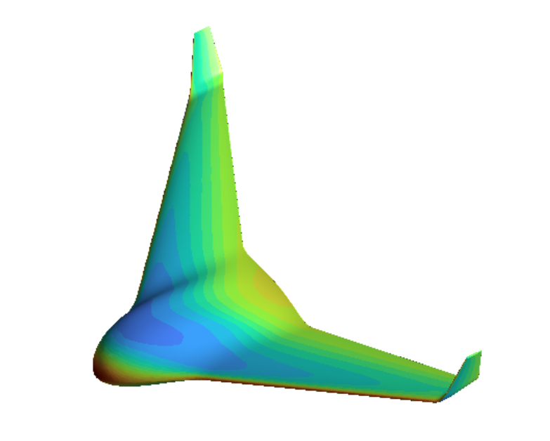